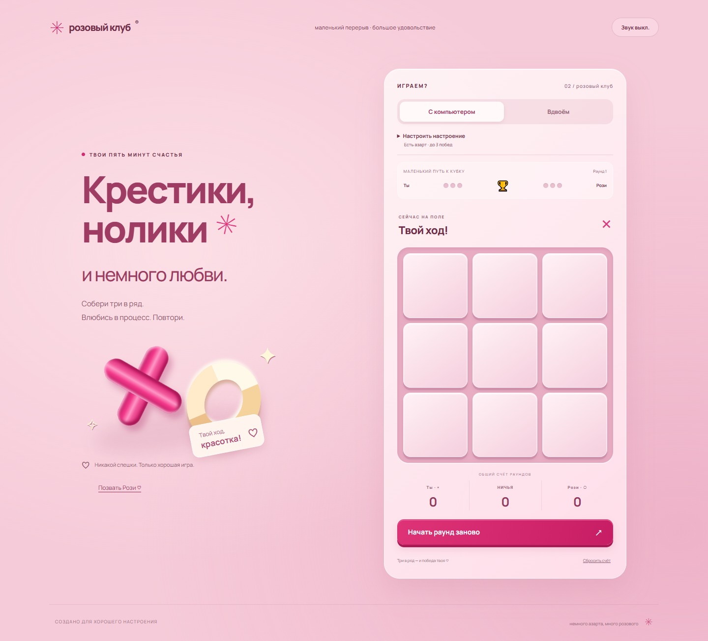
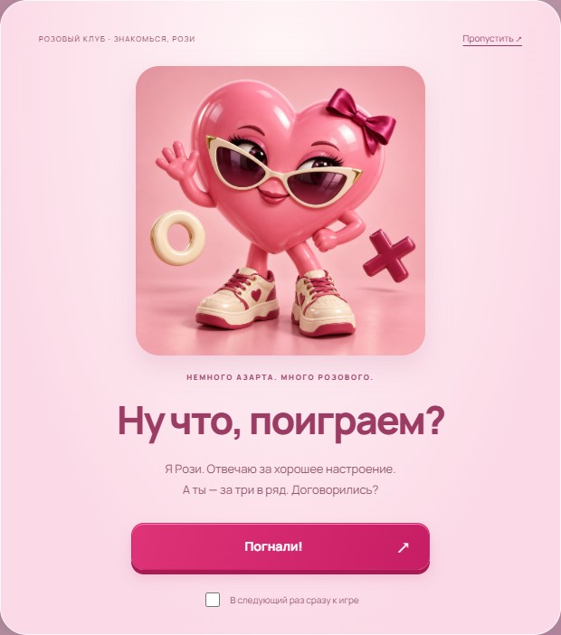
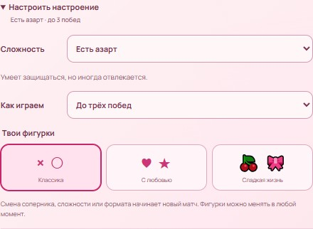

Личный проект · Браузерная игра · Создано с помощью ИИ
Розовые крестики-нолики
Знакомая игра с персонажем Рози, тремя уровнями сложности и выбором фигур. Можно играть с компьютером или вдвоём на одном устройстве.
Моя работа
Предложила визуальный ориентир — розовый постер — и утвердила иллюстрацию Рози. Игра создана вместе с ИИ-помощником; код и изображение персонажа подготовлены с помощью ИИ.
Немного азарта.
Много розового.
За основу оформления взяли розовый постер: клубничные оттенки, глянцевые фигуры, кремовые и малиновые акценты.

Один или вдвоём
Три уровня сложности против компьютера, игра вдвоём на одном устройстве, матчи до трёх побед или свободные раунды.

Знакомься, Рози
Рози встречает игрока на заставке. Её можно пропустить и сразу перейти к игре или снова позвать персонажа кнопкой.

Настроить под себя
Крестики и нолики, сердечки и звёздочки, вишенки и бантики. Наборы меняют оформление, сохраняя правила игры.
Звук включается по желанию. Настройки и статистика сохраняются в браузере; незаконченная расстановка после перезагрузки начинается заново.